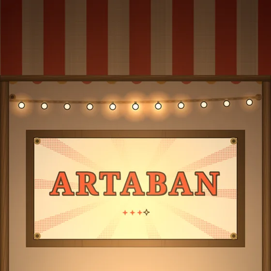
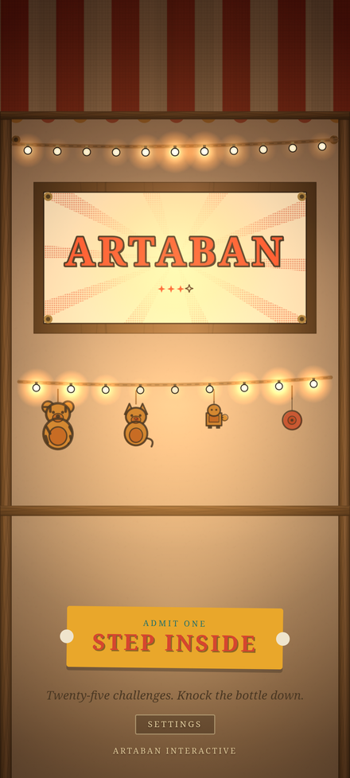
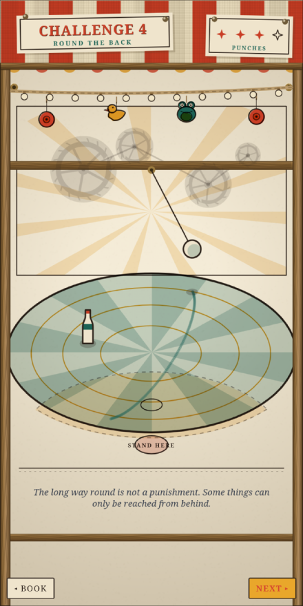
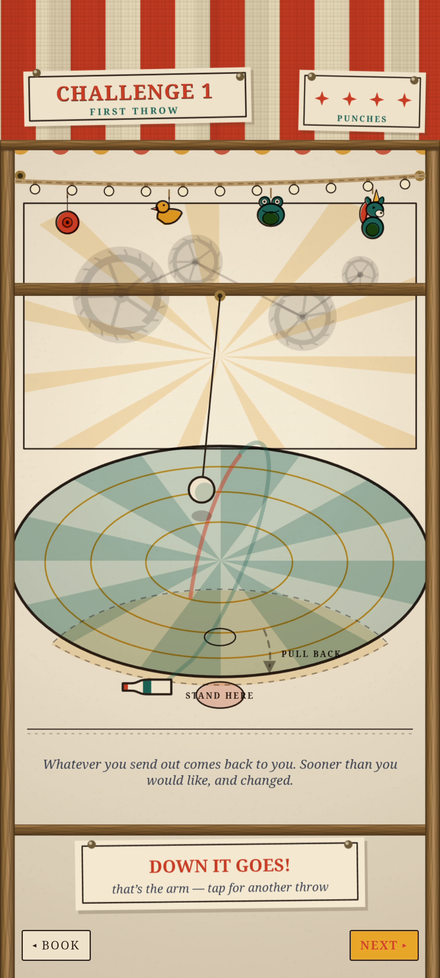
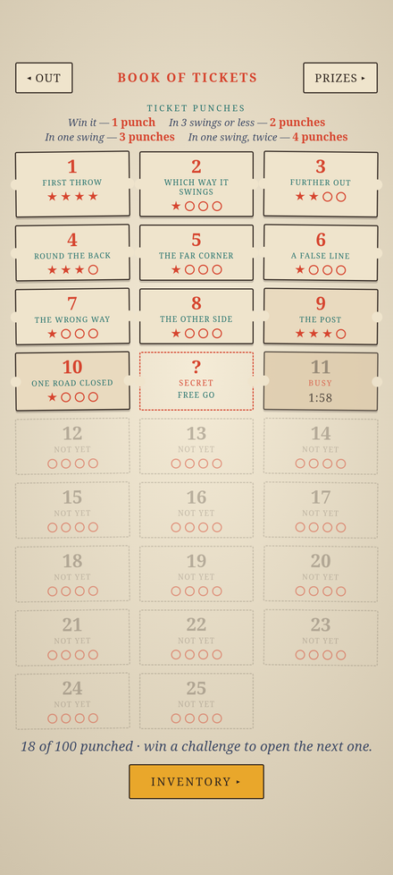
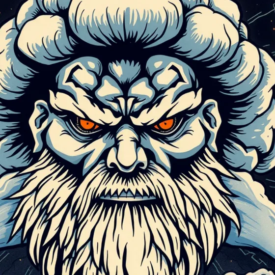

An independent studio of one. Everything here is drawn and sounded entirely in code — no stock art, no sample libraries, nothing borrowed.
Now playing

Android · out now
ARTABAN
A carnival booth rigged by physics. Twenty-five challenges, a weekly tournament, and one rule: the ball only counts on the way back.





Play in your browser

Pinball · free, nothing to install THUNDERHEAD An original machine, built from scratch: a storm god, a vortex skill shot, two locks, and a ramp over the top to a plinko canopy. Play free →How it is made
- 8,009lines of JavaScript in Artaban. No game engine underneath it.
- 45sounds in Thunderhead — every effect and every piece of music written as code.
- 0stock images or sampled instruments in either game.
Trailer